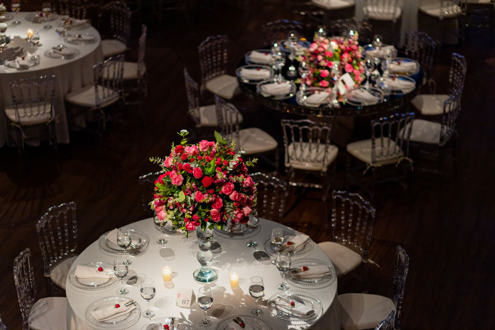

COMPREHENSIVE
Full-service planning
Custom quote
For families seeking guidance across planning, design, vendor research, and schedule coordination.
- Planning roadmap
- Design direction
- Vendor coordination